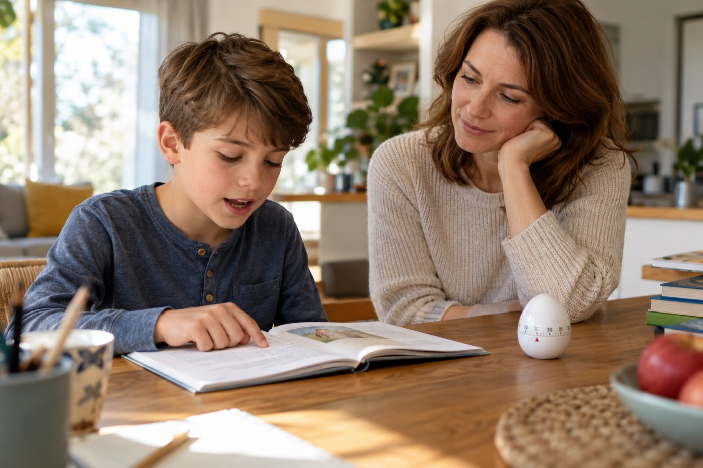

«Учительница сказала, что он читает 30 слов в минуту. Это плохо? Он отстаёт?» С такого вопроса часто начинается консультация о чтении.
Родитель приходит с одной цифрой и большой тревогой. По одной цифре я ничего не скажу: 30 слов бывают обычным этапом, а бывают поводом идти к логопеду.
Разберу, как я отличаю одно от другого: какие бывают ориентиры, как проверить ребёнка дома, из-за чего он читает медленно и что с этим делать. Случаи ниже собирательные, из моей практики.
Ко мне привели второклассницу Соню: читала быстрее всех в классе, а на вопрос «о чём рассказ?» пожимала плечами. Мама гордилась цифрой, пока не начались двойки за задания по тексту.
Когда учитель проверяет чтение, он смотрит на пять вещей:
Я смотрю на эти пункты в таком же порядке. Темп идёт последним, потому что сам по себе мало что говорит о чтении: Соня читала быстрее всех, а смысл терялся.
Единой цифры на всю страну нет: школы и программы ставят свои требования. Поэтому таблицу ниже считайте примерным ориентиром для чтения вслух, а точную планку спросите у учителя.
| Класс | Конец 1 полугодия | Конец учебного года |
|---|---|---|
| 1 класс | 20–30 слов | 30–40 слов |
| 2 класс | 40–50 слов | 50–60 слов |
| 3 класс | 60–70 слов | 70–80 слов |
| 4 класс | 80–90 слов | 90–100 слов |
Если ребёнок читает ниже диапазона, даже заметно, я смотрю дальше: растёт ли цифра от месяца к месяцу и читает ли он уже словами.
В 5–6 классе я смотрю уже на другое: успевает ли ребёнок прочитать и понять параграф, пока делает домашку.
Родителям я советую замерять раз в месяц, не чаще, и подавать это как игру. Если ребёнок почувствует экзамен, он разволнуется и прочитает хуже обычного.
Запишите в тетрадь три вещи: слова в минуту, число ошибок и ответы на вопросы. Через месяц сравните.

На консультации я раскладываю ситуацию на два столбика.
Скорее норма, если:
Пора действовать, если:
Фразу «перерастёт» я слышу на консультациях постоянно. Девятилетнего Диму родители ждали три года: в мае третьего класса он читал 31 слово в минуту, всё так же по слогам. Способ чтения закрепляется от повторения, и в пятом классе текстов станет заметно больше. Поэтому ждать, когда цифра стоит на месте, я не советую.
Сразу к логопеду, если ребёнок путает похожие буквы, переставляет их, пишет зеркально или те же ошибки повторяет в тетради. Это могут быть признаки дислексии, и домашние упражнения её не заменят. А если щурится и теряет строку, сначала проверьте зрение.
Если таких признаков нет, а ребёнок попал в столбик «Пора действовать», начните с причин. Главные я разберу ниже, а подробно о них расскажут на бесплатном вебинаре, который я всем советую.
Слова ещё не узнаются целиком. Самая частая причина. Дима каждый раз заново собирал даже «сказал» и «потом». Все силы уходили на сборку, на смысл их не оставалось.
Читает редко и большими порциями. Полчаса раз в неделю дают мало, нужно читать чаще. У Димы субботнее чтение к тому же заканчивалось ссорой.
Боится ошибиться. Семилетний Артём читал медленно и тихо, поглядывая на маму. Дома его поправляли на каждом окончании, и он приучился проверять каждое слово, прежде чем произнести.
Не хватает слов. Если в тексте много незнакомых слов, ребёнок спотыкается о них, даже когда читает технически хорошо. Помогает, когда взрослый объясняет их по ходу чтения.
Есть трудность, которую не видно снаружи. Дислексия, проблемы со зрением или слухом, сильная тревога. Такие причины определяет специалист.
Хватит 5–10 минут в день. Выбирайте одно-два упражнения под вашу причину, все сразу не нужны.
Один текст три раза. Возьмите отрывок слов на сто. Ребёнок читает, вы засекаете время, потом ещё два раза. На третий раз он почти всегда читает быстрее и слышит это сам. Это один из самых изученных приёмов для детей, которым чтение даётся трудно. Время записывайте в тетрадь: Дима рисовал столбики и показывал их папе.
Карточки с частыми словами. Выпишите двадцать слов, которые встречаются почти везде: «был», «она», «потом», «когда». Покажите карточку на секунду и спрячьте. Когда ребёнок узнаёт их сразу, остаются силы на трудные слова.
Трудные слова заранее. Перед чтением выпишите из текста пять самых длинных слов и прочитайте их отдельно, без спешки. В тексте он их узнает и не споткнётся.
«Буксир». Вы читаете вслух в спокойном темпе, ребёнок читает вместе с вами. Потом вы замолкаете, а он продолжает сам с того же места. Хорошо подходит для 2–3 класса.
Вопрос после абзаца. Для таких детей, как Соня. Прочитали абзац, остановились: «Что там произошло?» Если не помнит, вернитесь к предложению, где это случилось.
Если чтение в доме стало наказанием, упражнения быстро бросают. Чаще всего я советую родителям вот что:
Если ребёнок отказывается заниматься, не спорьте. Дайте ему самому выбрать текст, читайте по очереди, по одному предложению, и остановитесь через две минуты. Через неделю прибавьте ещё минуту.
Артёму помогло, что мама перестала поправлять его по ходу чтения. Голос у него стал громче, и теперь он сам дочитывает страницу до конца. Диме за два месяца удалось подняться с 31 до 48 слов в минуту. До нормы ещё далеко, но палец со строки он убрал сам.
С Соней было сложнее: цифра у неё была отличная, поэтому трудность долго никто не замечал. Мы начали с вопроса после каждого абзаца, и через пару месяцев Соня стала сама пересказывать короткие рассказы, а двоек за задания по тексту стало меньше.
Замер покажет, где ребёнок сейчас. Но из-за чего дети читают медленно или не понимают прочитанное, откуда берутся трудности с пересказом и почему уроки тянутся весь вечер, по одной цифре не понять. Если хотя бы один пункт из столбика «Пора действовать» про вашего ребёнка или цифра вас тревожит, я советую посетить бесплатный вебинар Матриус про детское чтение.
Его ведёт клинический психолог и психофизиолог Лилия Медянник. Она разберёт возможные причины медленного чтения, покажет, как чтение связано с пересказом, запоминанием и уроками, проведёт мини-практику и даст 10 шагов для дома. Это онлайн-собрание для родителей детей 6–13 лет.